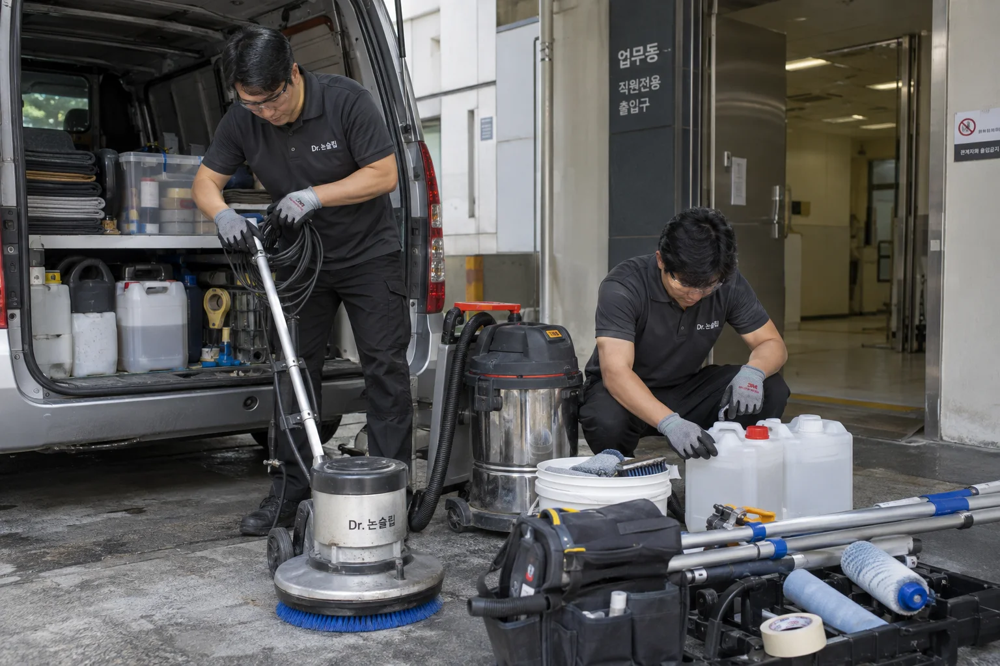

회사소개 · 닥터 논슬립
미끄럼방지 시공에
집중합니다.
고객을 맞는 로비, 직원이 일하는 주방, 가족이 쓰는 욕실.
닥터 논슬립은 기존 바닥의 미끄러움을 개선하는 전문 시공 브랜드입니다.


직접 운영하는
미끄럼방지 전문 시공팀
미끄러운 곳을 직접 찾아가 바닥 재질과 이용 동선을 살핍니다. 작은 구역에 먼저 시공해 효과와 외관을 보여드리고, 고객이 확인한 결과를 바탕으로 작업합니다.
전국 방문 실측·샘플 시공을 무료로 제공합니다. 적용 구역과 견적을 확인하고, 약제 분사·주변 보양·세척·회수까지 직접 진행합니다.
무료 현장 확인부터
시공 후 관리까지
닥터 논슬립이 현장에서 지키는 시공 기준입니다.
- 무료 방문 실측·샘플 시공
- 실제 바닥의 샘플에서 미끄럼 변화와 외관을 함께 확인합니다. 시공할 구역과 견적, 작업 일정도 시작 전에 안내합니다.
- 주변 보양·작업 구역 관리
- 재질과 기존 마감에 맞춰 작업하고, 금속·벽면·집기를 보양합니다. 현장 이용 동선과 시공 구역도 분리합니다.
- 12개월 무상 A/S·관리 안내
- 약제와 오염 잔여물을 세척·회수하고 이용 시점과 청소 방법을 안내합니다. 시공 후 12개월 무상 A/S를 제공하며, 적용 범위와 조건은 시공 전에 설명합니다.
전국 무료 방문 · 직접 시공팀 · 12개월 무상 A/S
식당·주방 / 호텔·수영시설 / 관공서·기업 / 유치원·요양원 / 가정 욕실